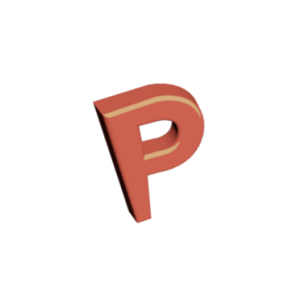

Time Log

Time Log é um site para tracking de tempo usado com atividades cotidianas e tomada de notas a
respeito destas. Front feito em react com backend em java spring. Por enquanto em andamento.
Link aqui em breve.
STS

Uma landing page para conversão de clientes que necessitam de serviços contínuos na área de
manutenção de redes e computadores. Feito com html, css e javascript.
Premiado

Premiado é um app para android feito em java com backend na firebase. É uma ideia
experiemental onde o usuário coleta pontos e os troca por tickets para participar de sorteio de
produtos. Disponível na google play.
Assorted Projects

Alguns projetos em javascript feitos para prática de programação e fluxo de commit de projetos.
Disponível no github.